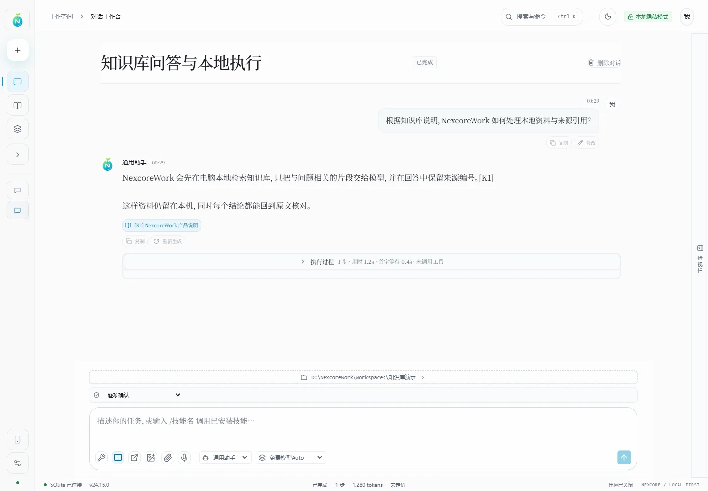
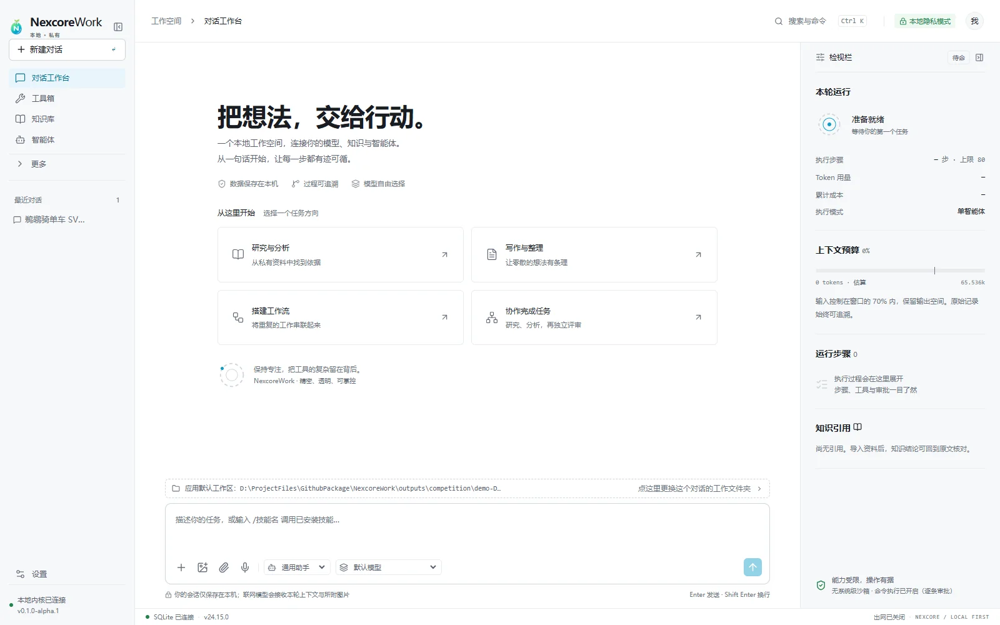
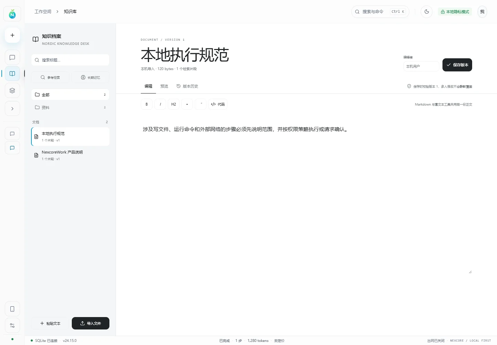
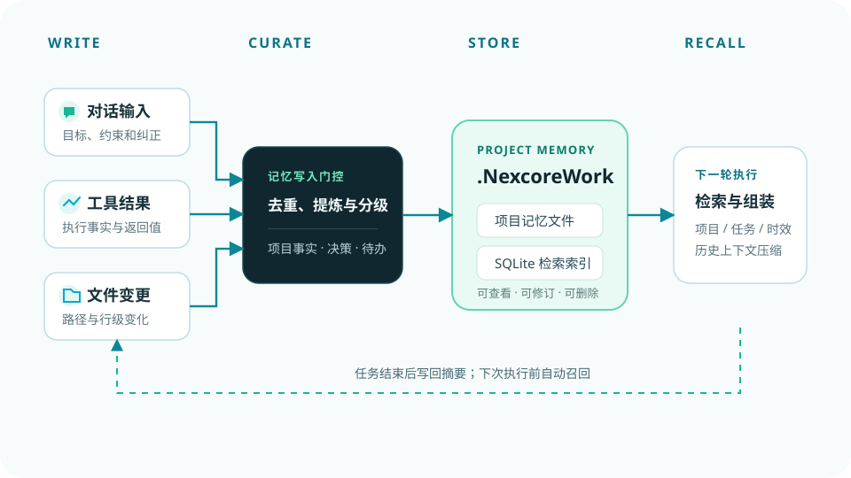
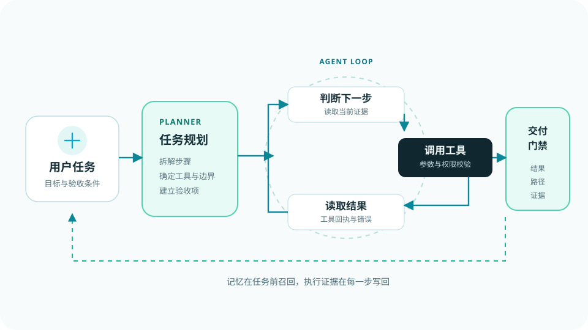

把想法，
变成完成的工作。
NexcoreWork 把模型、工具、文件、可解释记忆和执行证据放进同一条工作链。它不只回答问题，还能在你的工作区里持续做事。
Windows 10/11本地 SQLite免费模型开箱可用

免费模型 Auto按任务与速度路由
项目记忆本轮已更新
执行结果189 项检查通过
理解任务读取记忆调用工具复核交付
- 30
- 可审计工具
- 68
- 内置技能
- 9
- 专家智能体
- 189
- 核心测试
执行不是黑盒。
点开每一步，看到的不是一句“已完成”，而是任务在当时读了什么、调用了什么、改了哪些文件，以及为什么可以交付。
正在分析任务

动作工作区已锁定
证据目标 · 约束 · 验收项
状态可继续执行
FEATURED DELIVERABLE / SVG MOTION
一句话，
交付一件能运行的作品。
“鹈鹕骑单车”不是概念图，而是从一句自然语言任务开始，生成、渲染、复核并交付的完整 SVG 动画。官网直接展示最终产物，背后过程可以继续打开核对。
- 交付物
- pelican-bike.svg
- 文件规格
- 800 × 520
- 技术
- SVG + SMIL
- 状态
- 已渲染复核


.NexcoreWork 项目记忆
先写记忆，再执行任务。结构化事实以工作区 facts.json 为真源，SQLite 作为可重建索引；召回时先做 FTS5 筛选，再进行语义、图谱与重要性混合排序。
- 短期事件、中期事实、长期关系图谱分层保存
- MMR 去重，软遗忘降低概率但不删除记录
- 每次召回保留评分、来源与命中原因

SQLite 与工作区双存储
应用设置、会话、用量和加密密钥存入本地 SQLite；附件、产物和项目记忆留在用户选择的工作区。
- API Key 加密保存，重启后恢复
- 模型、单价、权限与界面设置持久化
- 工作区可备份、迁移和删除

独立视觉证据链
图片先经过本地 OCR、结构提取和免费视觉模型，融合成可追溯证据，再交给文本主模型，避免整张原图挤占对话上下文。
- 图片与文档可批量进入视觉队列
- 免费视觉模型与外部多模态可配置
- 文本、版面、对象与来源一起交付

Agent 执行闭环比一次生成更重要
规划器只决定下一步，真正的工作由工具完成。每一步结果回到观察节点，再由模型决定继续、修正还是交付。
- 模型判断下一步，系统负责执行与记账
- 工具错误可被读取并进入修正循环
- 交付门禁检查文件、路径和运行证据

长任务先管上下文，再谈换大模型
固定规则、项目注入、对话历史和当前输入分区计量。超限时优先压缩历史，保留约束、关键路径和可回读原文。
- 系统规则和验收条件不会被优先裁掉
- 压缩只改变本轮注入，不删除原始记录
- 工具结果和文件记录可以按需重新读取

工具能做什么，由权限边界决定
每次工具请求先经过策略引擎和服务端校验。文件、命令、网络和密钥读取分别受控，高风险操作绑定当前内容请求审批。
- 路径限制在用户选择的工作区内
- 审批绑定具体调用，内容变化后不可复用
- 单轮调用上限、连续失败熔断与参数脱敏

桌面端，
才是完整工作台。
原生文件选择器、任务栏右键、资源管理器定位、运行洞察和本地模型设置。切换页面查看真实界面。
Windows 10 / 11 · x64 · 安装包约 166.8 MB下载安装包 ↗
任务能力筛选视觉模型
当前路由免费视觉端点
优先选择支持图片输入、低延迟且当前可用的免费模型。
能力越大，
边界越要清楚。
本地优先不是把数据藏起来，而是把数据放在你能看到、能管理、能带走的位置。
数据库、附件和工作区默认留在电脑。
部分权限、完全权限与逐项审批可选。
凭据不进入分享备份，导出递归脱敏。
手机连接使用一次性配对与端到端加密。
下一件事，
从工作区开始。
下载 Windows 2.4.5，选择工作区，然后直接选择“免费模型 Auto”。